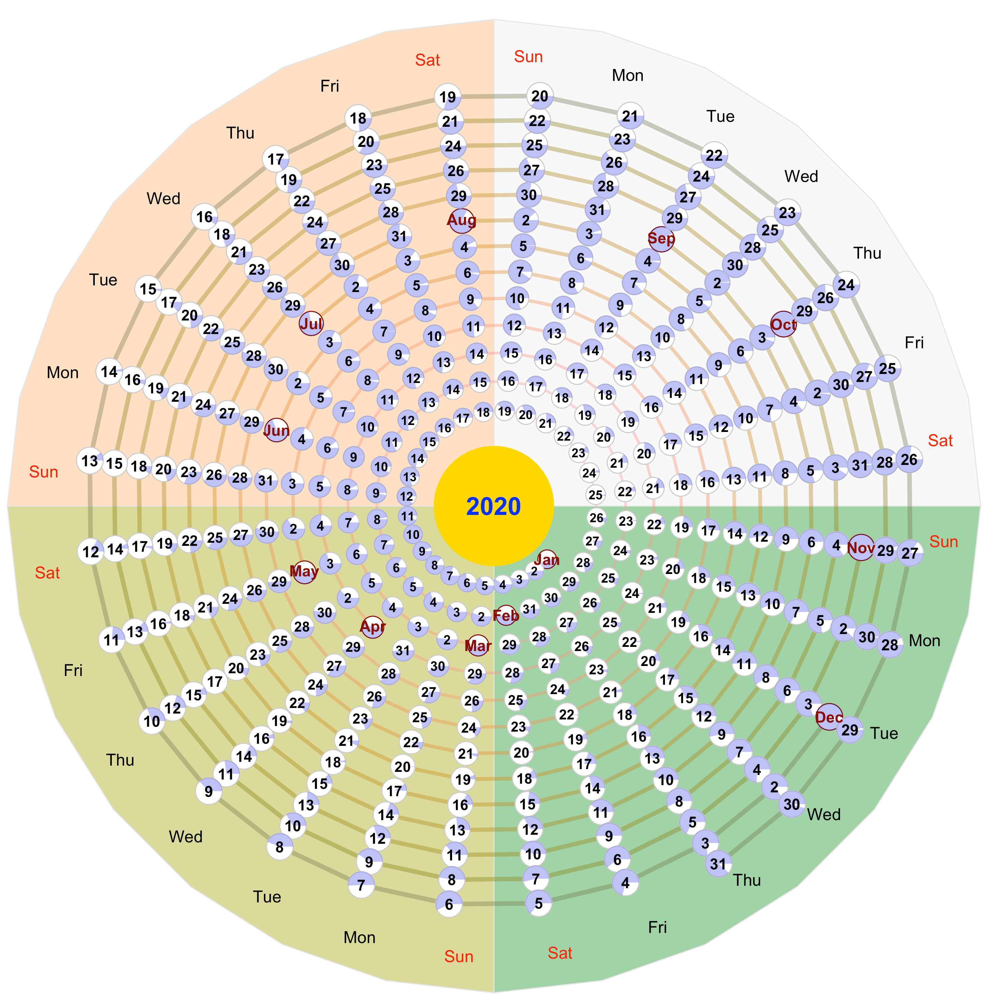

Spiral calendar
Different perspective of the calendar
 Spiral calendar
Spiral calendar
Is the current calendar is the best or only way to represent days?
The days we experienced, undergoing, and expecting are recorded a piece of paper; we call it a calendar, where marks days of years, months, weeks, and holidays. The current calendar appearance that organized with month and weeks are very efficient to display the days of week and month.
But, the calendar drops the original meaning of “Month”, which was related to the moon and moon phase, while the lunar calendar and lunisolar calendar (such as Chinese Calendar) still conserve the sense in the month. The month is defined according to the moon phase.
One month is defined from a black moon to the next black moon, as a lunar month. Since the Synodic period is ~29.5 days, some months have 29 and the others have 30 days. Winter(northern sphere) has more 29-day months, while summer has more 30-day month, because of the orbit speed of the earth.
Another problem with the mismatch of the lunar month is the number of days in a solar year. We have to find the common multiple between the moon synodic period and the orbital period of the earth. The days of a solar year is 365.25 days, but the number of days in 12 lunar months is ~355 days. The pure lunar calendar simply ignores the difference, so that the number of years is different from solar and lunar years. The Chinese calendar, which is a lunisolar calendar, solves the problem with leap months. Seven leap months are inserted in every 19 years, such that days in 19 Chinese years are the same as 19 Julian or solar years.
Above is the background.
I want to have a calendar that shows date, days of weeks and the moon phases together, and that represents the endless of time. Here is the calendar:

Lele Shu
Ph.D, Hydrologist, Lead of SHUD project
Hydrologist on distributed numeric hydrologic modeling, impact of landuse and climate change, Coupled Nature-Human-System
{kind=link}